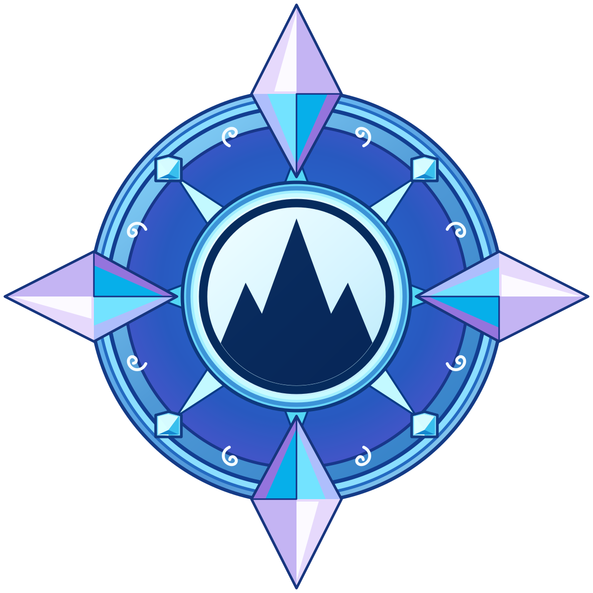

Stand-ins that most affect how cheap the app feels. One Realm set can cover most screens. Prefer SVG for icons; PNG with a transparent background if painted. Export 3× for raster (64 → 192 px). Keep a safe circle inside a square so landing pips, shrine gems, and Aurora pads can share one file. No type in the images except the Seal.
Same five symbols, two sizes. Use on the landing, header pips, Aurora tap buttons, award glyph, and Heart “remaining Realms.” Treat these as ice-carved seals, not generic weather emoji. Off state can be the same art, frost-etched / unlit.
| Asset | Size | Where it shows | Now |
|---|---|---|---|
| Water icon | 64×64 and 128×128 SVG/PNG | Landing, header, Aurora, award | Emoji / CSS blob |
| Earth icon | same | same | same |
| Fire icon | same | same | same |
| Air icon | same | same | same |
| Spirit icon | same | same | same |
| Realm icon on (awakened) | 64×64 | Header pips after a Realm is done | Opacity + glow on the emoji |
| Realm icon off (asleep) | 64×64 | Header pips, landing at 0/5 | Dim emoji |
Suggested names: realm-water.svg, realm-earth.svg, realm-fire.svg, realm-air.svg, realm-spirit.svg (plus -on / -off if you paint two states).
| Asset | Size | Notes |
|---|---|---|
| Landing crest | SVG, plus 1024×1024 PNG | Compass mark: mountain in a crystal ring, no snow on the top point. Above “Castle Quest” on the welcome page, beside the name in the header, on the loading screen, and as the browser icon. Source file logo-mark.svg. logo-mark.png is that SVG rendered with a transparent background, for browsers that need a PNG icon. |
| Ice-gate hero | 1080×1400 (or taller) | Replaces landing-gate.svg. Night corridor, lanterns, no baked-in text |
| Begin Quest button | 1092×174 (3× a ~364×58 pill) | Icy capsule, optional carved edge. We can also keep CSS and only swap a left-side icon |
| How to Play icon | 64×64 | Book / tablet on the pill |
| Map icon | 64×64 | Pin / compass on the pill |
| How to Play + Map button plates | 540×144 each | Optional if you want full illustrated pills instead of CSS |
| Asset | Size | Where |
|---|---|---|
| Meet | 128×128 | Shrine gate (handshake stand-in) |
| Discover | 128×128 | Shrine gate (compass stand-in) |
| Play | 128×128 | Shrine gate (play-triangle stand-in) |
| Map chip | 64×64 or full 108×36 pill | Header “Map” |
| Journey / progress ring center | 64×64 | Header ring (now a number) |
| Recenter | 64×64 | Map tool |
| Guardian-only (star) | 64×64 | Map tool |
| Filter | 64×64 | Map tool |
| Scan | 128×128 | Map scan FAB |
| Back to Quest | 64×64 or pill | Map “Quest” FAB |
Suggested names: icon-meet.svg, icon-discover.svg, icon-play.svg, icon-map.svg, icon-scan.svg.
| Asset | Size | Notes |
|---|---|---|
| Guardian pin — available | 128×128 | Extra glow. One per Realm, or one base + 5 color overlays |
| Guardian pin — complete | 128×128 | Dimmer / check / seal |
| Park pin (default) | 96×96 | Amenities / landmarks |
| Pin check mark | 64×64 | Replaces the tiny SVG tick |
| Asset | Size | Station |
|---|---|---|
| 6 Cascade tiles | 512×512 | Hairline vein, lantern glow, pressed arch, silk wing, frozen ripple, carved rune |
| 4 Ember lanterns | 256×256 | Ice, Amber, Rose, Violet |
| Aurora tap pads | 256×256 | Reuse the five Realm icons |
| Winter Keeper Seal | 1024×1024 | Finale reveal (now CSS rings). Type OK here: names, venue, season will sit on or under it |
| Award medallion | 512×512 | Realm-complete overlay; glyph sits on top |
| Asset | Size | Notes |
|---|---|---|
| Guardian portraits | 1080×1350 | Cascade, Granite, Ember, Summit, Aurora shrine headers |
| Monument / Heart art | same | Station pages |
| App icon | 1024×1024 PNG | Same compass mark on a night-blue plate so the crystal tips stay inside the home-screen mask. Phones still need a PNG here. logo-mark-app.png |
Five Realm seals + Meet / Discover / Play + landing gate + How to Play / Map icons. That covers the screens guests see first.
btn-begin-quest.pnglanding-gate.webp